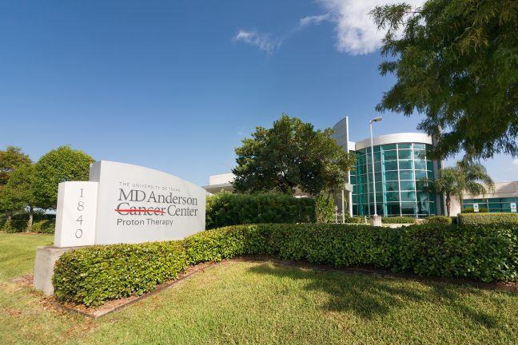

UT MD Anderson provides cancer care at several convenient locations throughout the Greater Houston Area and collaborates with community hospitals and health systems nationwide through our cancer network.

Proton Therapy Center
At more than 160,000 square feet, our Proton Therapy Center offers the most advanced radiation available to treat several different types of cancer. Visit our location just south of the Texas Medical Center and enjoy free on-site parking.
Address:
1840 Old Spanish Trail
Houston, TX 77054
Telephone:
1-833-992-0708
Diagnostic clinics and labs
UT MD Anderson offers diagnostic services in convenient, community-based locations. Diagnostic imaging clinics offer blood draws and preventative screening. A sub-specialized radiologist with expertise on advanced imaging techniques is available at each location.
Diagnostic Laboratory Centers
Getting blood drawn before an appointment can reduce clinic delays. UT MD Anderson patients can have their blood taken at any of our Diagnostic Laboratory Centers the day before their visits.
Our cancer network
Together with select hospitals and health systems across the globe, UT MD Anderson is advancing our mission to end cancer by improving the quality and accessibility of cancer care in local communities.